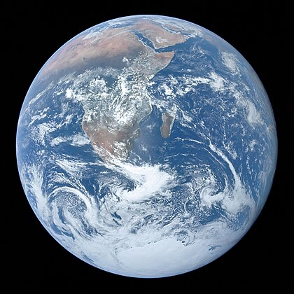
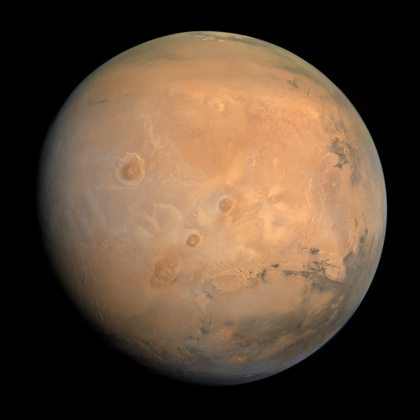

الزهرة
الكوكب الثاني من الشمس ويُعد الأكثر سخونة بسبب غلافه الجوي الكثيف.

الأرض
الكوكب الوحيد المعروف بوجود حياة عليه، ومغطى بالماء بنسبة كبيرة.

المريخ
الكوكب الأحمر، يتميز بوجود أعلى جبل وأعمق وادٍ في النظام الشمسي.

المشتري
أكبر كواكب المجموعة الشمسية، ويتميز بعاصفته الضخمة التي تُعرف بالبقعة الحمراء الكبرى.

زحل
معروف بحلقاته الجميلة التي تتكون من الجليد والصخور.

أورانوس
كوكب جليدي عملاق، يدور حول محوره بطريقة فريدة تميل على جانبها.

نبتون
الكوكب الأبعد عن الشمس، يتميز برياحه العاتية ولونه الأزرق العميق.